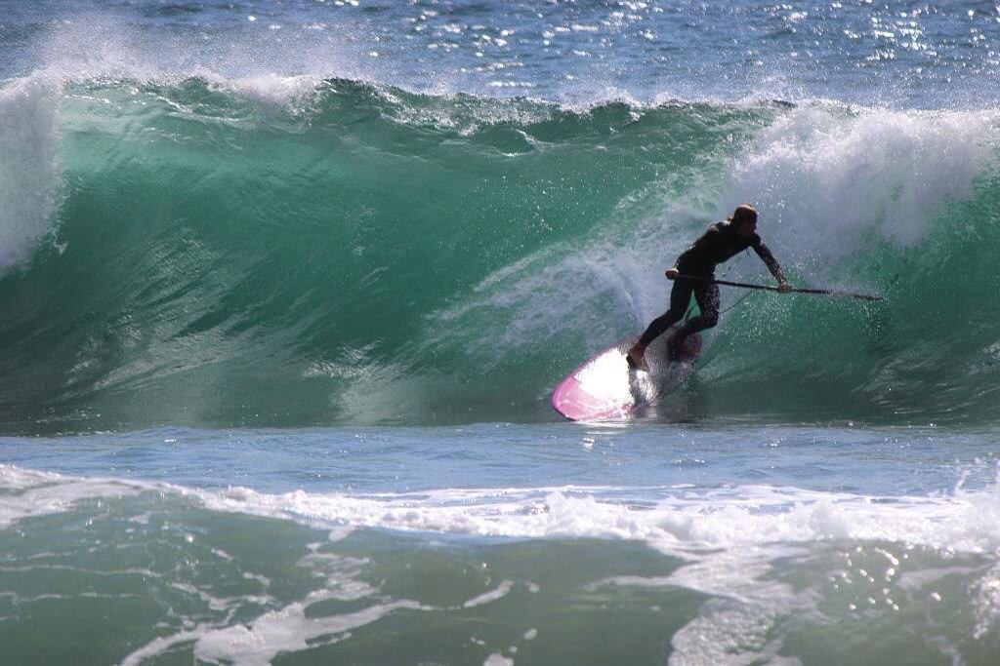
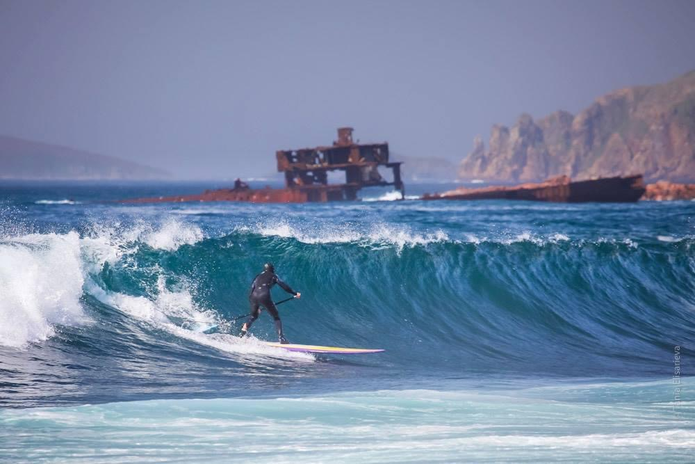
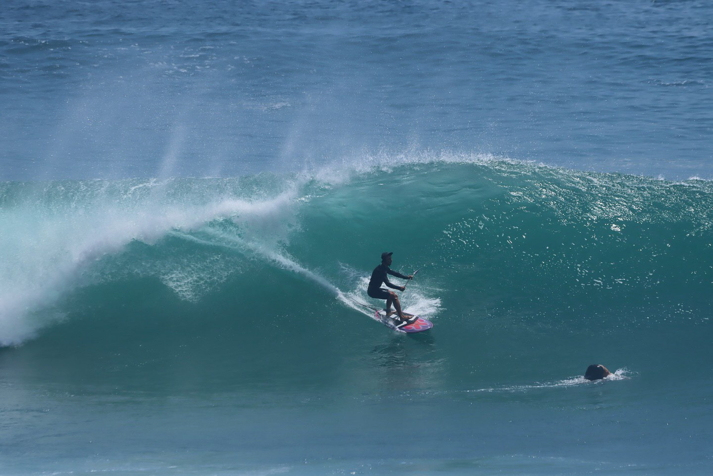

G-Land
Джунгли национального заповедника. Оленята у берега и бесконечная левая волна до самого завтрака.

Сумбава
Остров, воскресший из пепла вулкана. Дикая природа и полное слияние с тишиной океана.

Сумба
Первозданная дикость и отели-оазисы. Тот самый контраст, который вызывает искреннее «вау».

Ментаваи
Для тех, кто всё понял. Серф-путешествия на яхте или в люксовых резорртах для продвинутых серферов.

Владивосток
Серфовая часть России. Лазурные бухты, морские котики и легендарные приморские гребешки.

Мексика
Деревушка Саюлита. Эстетика лонгборда, плавные линии и легендарные поинт-брейки.

ЮАР
Масштаб двух океанов. Огромные бухты, киты и серфинг мирового уровня.